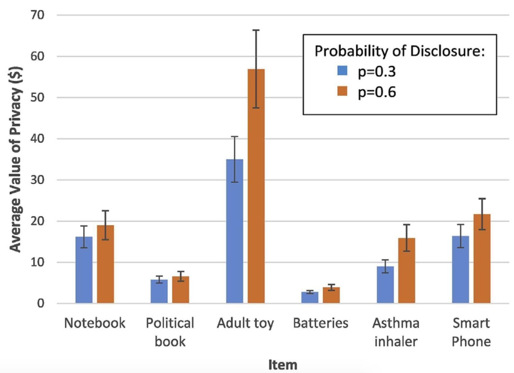
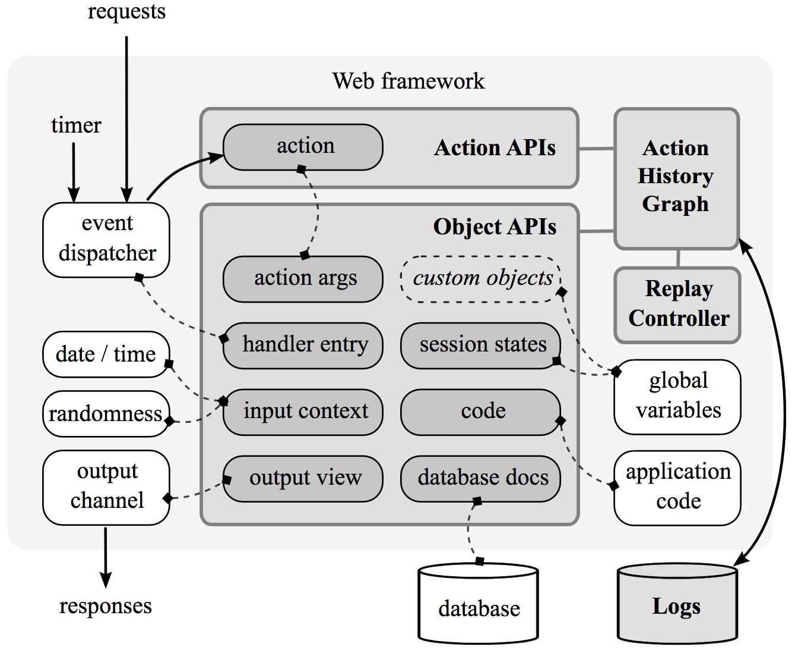

Data publicării: 10.01.2018
Autor articol: Sabin Buraga
Punerea problemei
În cadrul acestui material vom ilustra o serie dintre problematicile importante referitoare la expunerea nedorită a datelor (data exposure) de către aplicațiile Web – invocate pe servere Web autonome sau în cadrul unor soluții disponibile în “nori” (cloud computing) ori rulate în cadrul navigatorului Web – prezentând anumite lacune de securitate.
După cum am discutat în articolele anterioare, expunerea nedorită a datelor (sensitive data exposure) are ample implicații asupra intimității (privacy) și confidențialității, fiind una dintre cele mai importante riscuri de securitate a aplicațiilor Web actuale, conform raportului disponibil la finalul anului 2017 emis de OWASP (Open Web Application Security Project), o bine-cunoscută organizație non-profit focalizată asupra securității Web.
Conform (Buraga, 2017), (Gawlik et al., 2016), (Takata et al., 2017), aceste date pot fi preluate (in)voluntar prin diverse mijloace, dintre care pot fi menționate:
- Crearea unor adrese Web cu caracter malițios (malicious URLs) prin intermediul cărora se pot iniția diverse atacuri sau se pot prelua data confidențiale;
- Injectarea nedorită de cod JavaScript pentru a accesa informații stocate la nivelul clientului (cookie-uri, date din fișiere sau baze de date locale);
- Injectarea unor comenzi SQL via formulare Web pentru a accesa date de pe server;
- Redirecționări neautorizate spre situri potențial dăunătoare care pot prelua de la utilizator date de interes (a se vedea amplul fenomen de phishing);
- Atacuri efectuate asupra intermediarilor (proxy-uri) Web, în vederea obținerii de date disponibile în cache;
- Identificarea navigatorului Web (browser fingerprinting) și a platformei hardware/software pe care rulează pentru a monitoriza activitățile efectuate de utilizator (user tracking);
- Exploatarea vulnerabilităților interpretoarelor JavaScript (script engines) incluse de browser-ele Web.
- Recurgerea la componente, biblioteci JS, widget-uri etc. potențial dăunătoare sau compromise.
Metodologie privind estimarea valorii importanței datelor personale
Pentru a preîntâmpina aceste atacuri, s-au propus diverse metodologii și cadre de lucru.
În continuare, din prisma comportamentului utilizatorilor finali interacționând cu aplicații Web, vom descrie succint o metodologie referitoare la estimarea valorii intimității în sistemele informaționale care expun involuntar date “sensibile”, pe baza cercetărilor disponibile în (Hirschprung et al., 2016).
Astfel, se poate realiza o estimare a valorii riscului de pierdere a intimității via VOPE (Value of Privacy Estimator), o metodologie iterativă și adaptabilă care ia în considerație acțiunile utilizatorilor în efectuarea tranzacțiilor electronice de către sistemele de tip e-commerce prezentând anumite breșe de securitate, în special expunerea de date confidențiale. Studiile efectuate au arătat faptul că utilizatorii finali ar prefera să plătească un serviciu premium care să asigure o mai bună securitate vizând comenzile online realizate – această disponibilitate poate fi măsurată pe baza unui factor denumit WTP (Willingness to Pay), care indică valoarea acceptată de plată pentru protejarea informațiilor confidențiale. De asemenea, poate fi luat în considerație și parametrul WAT (Willingness to Accept), reprezentând valoarea minimă cu care utilizatorii ar putea fi “recompensați” pentru a divulga voluntar informații cu caracter personal.
Autorii articolului mai sus menționat descriu algoritmul general și studiul empiric – din punctul nostru de vedere, reprezentând și un veritabil experiment social – efectuat pe un număr de 195 de participanții.
În figura de mai jos, se pot remarca rezultatele obținute pentru 2 grupuri de persoane – fiecare având probabilități diferite de risc de expunere a datelor personale –, pe baza unor propuneri ipotetice vizând obținerea unor reduceri de preț la achiziția unor (categorii de) produse în schimbul divulgării unor informații confidențiale. După cum era și de așteptat, cu cât produsul prezintă un caracter mai intim pentru cumpărător, cu atât factorul WAT are valoarea mai mare.

Pe baza metodologiei, proiectanții de sisteme interactive pot lua în considerație diverse soluții vizând includerea opțiunilor de ajustare a preferințelor utilizatorilor, eventual în mod automat, prin tehnici de învățare automată. Metodologia poate fi extinsă și la alte domenii – e.g., confidențialitatea datelor medicale sau militare. De asemenea, pot fi luate în considerație nu doar produse tangibile, ci și servicii.
Identificarea retroactivă a expunerii datelor private
A doua parte a acestei lucrări se referă la mijloacele de identificare automată a breșelor de securitate care vizează expunerea nedorită a datelor cu caracter privat.
În literatura de specialitate există descrise numeroase abordări, o serie de exemple fiind cele prezentate în (Cho & Pan, 2015), (Papagiannis et al., 2016), Mylar (Popa et al., 2016) și Verena (Karapanos et al., 2016).
În continuare, pe baza articolului (Chen et al., 2014), vom descrie cadrul de lucru RAIL (Retroactive Auditing for Information Leakage), un instrument pentru identificarea precisă a informațiilor expuse nedorit de către o aplicație Web – de exemplu, un sit Web de evaluare online a cunoștințelor, un sistem de management al datelor despre pacienți, o platformă de monitorizare a datelor transmise de senzorii montați într-un edificiu și așa mai departe.
Problema auditării expunerii datelor trebuie să ia în considerație și aspectele legate de integritate: analizarea vectorilor de atac, detectarea intruziunilor anterioare și recuperarea după incidentele de securitate. Provocările vizează atât reproducerea post-factum a comportamentului real al aplicației Web în stare de rulare, cât și natura și importanța datelor expuse, plus dependența componentelor software care au cauzat aceste expuneri indezirabile de celelalte module ale aplicației analizate.
Arhitectura generală a sistemului Rail este ilustrată de diagrama următoare.

După cum se poate observa, funcționalitățile sunt disponibile și prin intermediul unui set de interfețe de programare (API-uri) aliniate paradigmei orientate-obiect. Lucrarea (Chen et al., 2014) detaliază maniera de exploatare practică și considerațiile privind integrarea funcționalităților în alte sisteme software.
Referințe bibliografice
- Buraga, S., Tehnologii Web, Facultatea de Informatică, Universitatea “Alexandru Ioan Cuza” din Iasi, Romania, 2017: http://profs.info.uaic.ro/~busaco/teach/courses/web/web-film.html
- Haogang Chen, Taesoo Kim, Xi Wang, Nickolai Zeldovich, M. Frans Kaashoek, “Identifying Information Disclosure in Web Applications with Retroactive Auditing”, Proceedings of the 11th USENIX Symposium on Operating Systems Design and Implementation (OSDI’14), 2014: http://www.usenix.org/system/files/conference/osdi14/osdi14-paper-chen_haogang.pdf
- Ying-Chiang Cho, Jen-Yi Pan, “Design and Implementation of Website Information Disclosure Assessment System”, PloS one, 10(3), 2015: http://journals.plos.org/plosone/article?id=10.1371/journal.pone.0117180
- Robert Gawlik, Philipp Koppe, Benjamin Kollenda, Andre Pawlowski, Behrad Garmany, Thorsten Holz, “Detile: Fine-Grained Information Leak Detection in Script Engines”, Technical Report TR-HGI-2016-004, Horst Gortz Institute for IT Security, Ruhr-Universitat Bochum, 2016: http://www.hgi.ruhr-uni-bochum.de/media/attachments/files/2016/07/TR-HGI-2016-004.pdf
- Ron Hirschprung, Eran Toch, Frank Bolton, Oded Maimon, “A Methodology for Estimating the Value of Privacy in Information Disclosure Systems”, Computers in Human Behavior 61, 2016.
- Nikolaos Karapanos, Alexandros Filios, Raluca Ada Popa, Srdjan Capkun, “Verena: End-to-End Integrity Protection for Web Applications”, IEEE Symposium of Security and Privacy, 2016: http://people.eecs.berkeley.edu/~raluca/verena.pdf
- Ioannis Papagiannis, Pijika Watcharapichat, Divya Muthukumaran, Peter Pietzuch, “BrowserFlow: Imprecise Data Flow Tracking to Prevent Accidental Data Disclosure”, Middleware’16, 2016: http://yia.nnis.gr/publications/mw16-browserflow.pdf
- Raluca Ada Popa, Emily Stark, Jonas Helfer, Steven Valdez, Nickolai Zeldovich, M. Frans Kaashoek, Hari Balakrishnan, “Building Web Applications on Top of Encrypted Data Using Mylar”, Crypto ePrint Archive, 2016: http://css.csail.mit.edu/mylar/mylar.pdf
- Yuta Takata, Mitsuaki Akiyama, Takeshi Yagi, Takeshi Yada, Shigeki Goto, “Fine-Grained Analysis of Compromised Websites with Redirection Graphs and JavaScript Traces”, IEICE TRANSACTIONS on Information and Systems, Vol. E100-D, No.8, pp.1714-1728, 2017.
- * * *, Mylar: http://css.csail.mit.edu/mylar/